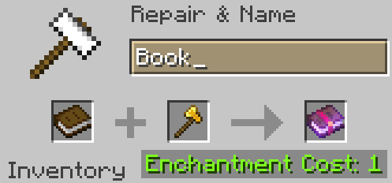

Enchants!
OnyxPack adds some new enchants to "enhance your gameplay experience" or something. Here's a list,
Timber Enchant
Cut down entire trees in once chop!
To make the Timber Enchantment, combine a Book and a Golden Axe in an Anvil like so. The Golden Axe is a reference to the fact Golden Axes had Timber Build in in very old versions of OnyxSMP.